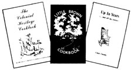

At a time when over 30,000 new book titles appear on the market each and every year, can a one-man publishing outfit-operating from a bedroom, cellar, or garage-hope to survive ... let alone compete? Well, despite runaway paper costs, a tight national economy, and the recent rise in illiteracy, Stephen D. Brown says "You bet!" And he should know. Because for the last year and a half (ever since he finished college) Steve has been busily turning out books under the highly successful Little Brown House imprint. What was once a part-time hobby for Steve has now blossomed into a full-time-and lucrative-self-publishing career. Sound interesting? Then let Steve Brown tell you how . . .
I suppose it was just one of those happy accidents of fate: In December of 1972-when the members of my widely scattered family came together to celebrate Christmas-the whole group embarked on a self-publishing venture entirely on the spur of the moment. At the time, none of us ever dreamed the little enterprise would still be paying handsome dividends three yuletides later!
The family project that launched us into the publishing business was a collection of our favorite recipes we titled The Little Brown Cookbook. Looking back, it was probably all to the good that we didn't have much time to spend on the endeavor before again going our separate ways. In a matter of days my mother and sister had collected and edited the book's contents, my brother had hand-lettered each page and drawn illustrations, and I'd taken care of layout and printing arrangements.
None of us had had any experience in the booklet business ... so we couldn't guess at the sales potential of our homey 48-page tract. Thus it was with a blind faith that we ordered what was, to us, a staggering press run of 2,000 copies of the book.
It wasn't enough! Bookstores and souvenir and gift shops sold out within several months. We ordered more and more books from the printer. The hard part was done . . . all that remained was to count our mounting profits.
This initial success made me anxious to publish another book so, as soon as I finished my college studies, I returned home in the summer to write a 40-page illustrated guidebook about the town made famous by John Brown's 1859 raid: Harpers Ferry. Two months after the first copies came off the press I was sold out. I quickly ordered 5,000 more copies, and the profits from these books-together with money still coming in for The Little Brown Cookbook -made a sizable fund for future book investments.
In the meanwhile, other people and organizations approached me wanting to know how they too could start their own business, supplement incomes, or conduct a fundraising drive with my methods. I was pleased to assist these individuals and groups whenever I could ... and I was delighted when that assistance sometimes helped others to really "hit the jackpot". For instance, one lady that I talked to-a 72-year-old retired widow-thought a booklet about her own unique approach to being "up in years" would appeal not only to senior citizens, but many middle-aged folks as well. She self-published a 40-page manual and with her first inquiry found a profitable outlet with the largest mail-order company in the world.
This woman's way of breaking into print, by the way, should not be confused with vanity publishing. The vanity press in this country, in general, is notorious for producing books of questionable literary merit while, at the same time, skillfully duping authors out of thousands of dollars for the privilege of seeing their names in print. Many times-if not most times-vanity press books are not distributed, sold, or even produced in the quantity expected by the author.
By contrast, self-publishing is the process of writing, producing, promoting, distributing, and handling all other aspects of putting a book in the final buyers' hands. By eliminating in this way most or all of the middlemen who usually stand between an author and his or her readers, you can realize a greater financial return on and increased flexibility in your publishing, projects.
Self-publishing for a living is not exceedingly difficult, requires little investment, and calls for little or no special equipment. And the rewards-besides profit-can be many, depending upon your outlook. You'll work at home with little pressure (no nine-to-five routine), have no boss but yourself, and enjoy a certain prestige which goes with being an author and a publisher ... in addition to finding an expressive creative outlet. To me, this is all a joy, especially when I see that others enjoy my work too.
The most important question to consider before starting your venture is, "Do I have something of interest to say or offer to others?" If the answer is truly "yes", you've largely solved your distribution, and marketing problems. However, if you want to publish something in your field of interest and that field happens to be "How the Seventh Regiment Signal Corps of the Confederate Army Differed from the Eighth, 1863", you'd be well advised to think about where and to whom you could sell such a tract in a quantity that would cover your printing costs. New York publishers only accept manuscripts when they feel the costs of production can be matched by future sales. The same rule should apply to the self-publisher.
On the other hand, topics of strictly local interest which New York houses wouldn't touch with a three-meter pole can sometimes be just right for the self-publisher. For instance in 1972, just after Hurricane Agnes wreaked havoc on the East Coast, an enterprising photographer quickly put together a 24-page illustrated booklet detailing the damage done by the storm in his medium-sized city. Gift shops and stores completely exhausted the 5,000-copy press run within two months.
Before you start on any self-publishing venture, you should also consider how many pages to aim for, the possible dimensions of the finished book, and the initial number of copies you want to produce. Page size and the total number of pages are the single biggest cost factors . . . exclusive of such things as color reproductions, special card stocks, embossing, and the like. Once plates and negatives are made (and be sure to ask the printer to save them!) per book cost plummets with a greater press run. That is: The more copies you print, the less each individual copy should cost. Be sure and take this into account too.
Of course, if you anticipate only a limited market-or just want to play it safe-it makes no sense to place a large initial order for booklets just to bring down the "per book" cost. Here, the most intelligent thing to do is pay more for each book-at least on your initial test printing-rather than stuff a thousand unsold copies under your bed.
Depending on the book you're producing, you may want to hand letter, set on a typewriter, or typeset its copy. And, if you choose "real" typesetting, you must next decide if the columns of copy will have a ragged right edge or if they'll be "justified".
Typesetting has two purposes: to increase visual appeal, and to cram more words onto a page (which can mean a substantial reduction in printing costs). A book set in a serif type font and squared-off columns looks fancy, and that fanciness can sell books. However, before you rush off to the typesetter let's take a cold, hard look at the costs involved in justifying your copy.
Unless you know someone in the business, typesetting rates vary from $7.50 to $20.00 an hour in most locales (which can obviously make production costs soar unless coupled with a financially attractive printing arrangement). If you prefer to set your own justified copy, IBM will lease you a composer (that you can plug into any electrical outlet and use right at home) for six months for about one thousand dollars. It goes without saying that, if you're planning only one book, the costs of leasing such equipment are too high. After all, your goal is the highest percentage of return on the smallest possible investment!
Visit some printers or typesetters in your local area and ask for a quote. If typesetting is scandalously expensive where you live, send me a self-addressed stamped envelope at Box 7 , Harpers Ferry, West Virginia 25425 and a letter outlining your needs. I'll get a quote for you from some of the sources I've used and be happy to assist you in any other way I can. MOTHER'S NOTE: Please send a dollar along with that request. It's only fair, considering the help that Steve's offering.)
Should you decide against typesetting your book, of course, you can either have its copy hand-lettered or typed. If you desire the homey or intimate appearance of hand-lettering, be sure to use black India ink on clean white paper. Otherwise , if you type your book-or hire someone to type the manuscript for you-make certain that it's done with a fresh black ribbon, preferably film or carbon.
After your manuscript is written, edited, typed, and ready for reproduction, it's time to think about illustrations. Photos and artwork with gray tones-as opposed to black-on-white line drawings-will have to be "screened" and thus will add a bit more to your initial printing costs. (Your printer will explain to you such things as screening, how to enlarge or reduce drawings, etc.)
"Line-Up" pads-which can be bought at any well-stocked graphic arts supply store-are indispensable for accurate layout work. Each sheet of card stock in these pads is ruled into small squares with light-blue ink. (Blue does not reproduce when photographed for offset printing.) While you're at the art store, also buy several light-blue pencils so you can draw and make notations on the layout sheets.
Outline in blue each area on the layout where you wish an illustration to be and mark both the actual drawing or photo which will be photographed separately-and the empty box on your layout with a code letter.
Finally, mark off the areas where text is to go (here, be sure and indicate consistent margins for each page) and then cut and glue your photo-ready copy-whether hand-lettered, typed, or typeset-to the layout sheet using fresh rubber cement. Take your time and do a careful job. Wipe off excess glue and erase stray marks. Remember, this is the way the final printed page will appear, exactly.
Usually, the initial two pages of a book-the first and its flip side-are reserved for a title and copyright notice, respectively. If you want to reserve all publication rights to your work, the copyright notice must appear in the printed book ... otherwise, whatever you've printed is forever considered to be in the "public domain".
Obtaining the copyright for your book is a simple procedure. Basically, anything which is reproduced-even mimeographed-can be so protected. To learn more about this important subject, I'd highly recommend that you write for the free "General Information on Copyrights-Books", Copyright Office, Library of Congress, Washington D.C. 20559.
Now your book is ready to be reproduced. If you choose to patronize a local printer rather than a firm specializing in small books and limited editions, make sure you get a written agreement in advance which lists all specifics pertaining to the book's design, total cost, and delivery date.
Dealing with printers is an area in which you cannot exercise too much caution. The craftsmanship of the man you choose will be reflected in your final product . . . and if his work is found lacking, your sales will be affected. Above all, shop around among local printers and compare. You'll probably find that cost estimates for any given job vary wildly. (Recently, I asked two local firms to price a certain one-page flier. One quoted $54.00 ... the other $39.00. The Mother Earth Print Shop said $20.00. All on the same job! See what I mean?) You'll also find that the lowest bidder might very well do the best work.
Papers come in a kaleidoscope of colors and textures. Ask to see some samples. White offset paper is the most economical for a book of acceptable quality. In general,be careful when you choose page and cover stocks . . . paper is no longer inexpensive.
The weight of the paper you choose will have a decided effect on both the appearance and the cost of your manual or booklet. If the sheets are too thin, your book will look skimpy and the ink may show through . . . while if each page is too heavy, you've wasted money and the finished volume may not even fold flat. Ask to see samples. Text is generally printed on a 60-or 65-pound paper, and a 70- or 80-pound cover stock is common.
Black ink is least expensive and recommended for 90% of all books. (Think twice-maybe even three times-before you ask for orange ink on violet paper.)
Most small books under 80 or so pages are saddle stitched . . . which simply means they're stapled along their fold. If your book contains more than 80 pages-or in special circumstances-you can have its pages perfect bound, or glued to a flat spine (as is done with Mechanix Illustrated, Woman's Day, etc.). This costs appreciably more. Spiral binding is used on a good number of manuals and church produced cookbooks. This is the least expensive way to hold a large number of pages together and a volume, so bound, stays flat when opened. I might point out, though, that some bookstores are biased against spiral bound books (partly because the pages rip out more easily).
The challenge is not to tell, but to sell.
When you begin to wholesale your book to retailers, they will want a discount of from 30 to 50% off its cover price. (Don't be alarmed. The standard trade discount ranges from 40 up to 60% or more.) Leave no possible outlet-bookstore, gift shop, magazine stand, department store, whatever seems appropriate-unaware of your work. Sometimes a buy-back agreement with a retailer-as opposed to consignment-will seal the deal. Do whatever it takes to get your book on the market.
In your search for exposure, don't neglect mail-order advertising, book clubs, and book services. After you've built up a list of titles, have a catalog printed and distribute that. Inquire also about having your book sold through mail-order companies. You may want to send a copy of the work to the largest book wholesaler in the world, Baker and Taylor Co., 6 Kirby Ave., Somerville, N.J. 08876. (Ask them for a book information form.) In addition, you should contact the R.R. Bowker Company, 1180 Avenue of the Americas, New York, N.Y. 10036 for information on how your treatise can be listed-free of charge-in their various reference works, including the well-known Books In Print.
Reviews can be important to the success of a book, too. For that reason, send copies of your work to all the local newspapers ... and even some magazines, if the subject warrants. (Hint: Try to find a name to write to ... don't just mail your book off to "The Book Reviews Department, Daily Post".)
For more information on self-publishing and a list of distribution outlets, contact COSMEP, P.O. Box 703, San Francisco, Calif. 94101.
Prestige, excitement, a chance to express yourself-and the opportunity to make some money-they're all yours when you "Start Your Own Publishing Business"!
|
 |
|
|